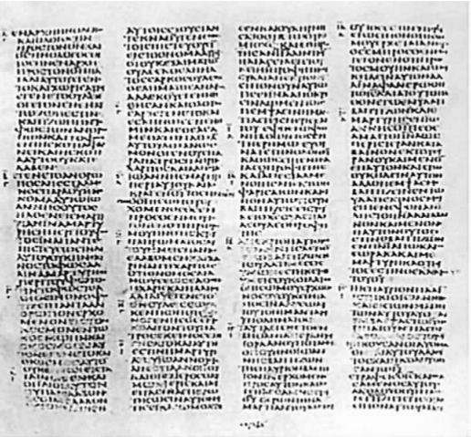
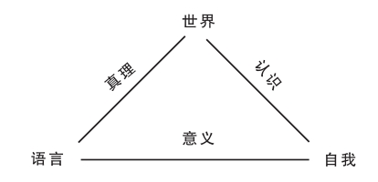
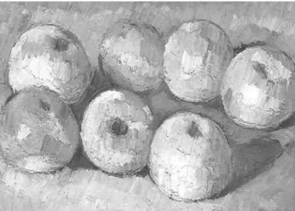

倘若你想研究好神学，有哪些技巧及思考方式能有所助益呢？前两部分已经勾画出了这一领域的地图并对之有所探索。探索的目标是为了对神学家所作的那种思考稍有体味。但是，这种思考又是从何而来？假如首次涉足这一领域，应该从何处着手？
本部分将会提示神学的初学者需要学些什么。本章关注的是密切相关的两件事所需要的技巧：阅读、阐释、运用文本；通过研究历史开启通向过往之门。下一章将就神学中理解、认识、决定的类型，以及初学者如何才能具备这几方面的能力提出问题。这两章同样联系紧密，因为神学方面的理解、认识和决定多与文本和历史相关。
“文本”是书面文字的集合。它可以是一个句子、一首诗、一本书、一封信、一篇公祷文，甚至一张洗衣单。文本在善恶两面都有巨大的力量，在社群、局势和个人生活的塑造方面扮演着至关重要的角色。滥用文本的情况非常糟糕，这突出了学习尽可能正确处理神学文本的迫切性。约翰·鲍克就错误阐释经卷的一种常见方式说明了这一观点。依照这种方式，文本（指诗行或句子）被抽离出所处的历史语境和文学语境，被看成是包含了绝对真理的文字，与时间、环境或人无甚关联：
面对以上这些例子，以及其他一些声称文本开启了使生活更加美好的各种真理的例子，初学者该如何接近神学文本呢？
我现在假定，如果你是位神学的初学者，那么你已经学会了用自己的母语进行阅读。要真是这样，好消息就是，许多基本原则只不过是弄清那些你凭借常识就已知道的东西。其中最基本的原则，正如尼古拉斯·拉施所言，文字通常是“从其同伴处”获得意义。（尼古拉斯·拉施，《三种途径，一种信仰》，12）对于许许多多的词语，下面一点显而易见：要是没有任何进一步的提示，“he”或“to”或“of”到底是什么意思？

图9 希腊文《圣经》西奈山抄本（此为《约翰福音》篇首），安色尔体手稿，书于精制皮纸，一页四栏，或出于4世纪晚期的埃及。于1844至1859年发现于西奈山圣凯瑟琳修道院
“on”一词有着不同的含义，就看它的同伴是法语还是英语。 [8] “Creation”也有不同含义，就看它是用在神学当中还是用在某种新名号之下。通常，要获得一个有价值的意义单位，你至少得有个句子。可是，根据所处段落的意义，该句的意义可能会大相径庭，同样，段落在某一章的语境中如此，此章在某本书中也是如此。
在书这一层次上，如果你认为它是小说而不是自传或历史，你的理解也会大不相同。这就是所谓的“体裁”的问题，而在神学当中，比如关于《创世记》开篇几章是历史、是科学论断、是祈祷书、是神话、是传奇，还是其他什么，存在着很大争议。一本书也同样有其同伴——丛书中的一卷？对另外一本书的回应？或者是《圣经》的一部分？成为《圣经》，或曰“真经”的一部分，会使任何一本书的阅读方式受到影响。这在《雅歌》（或《所罗门之歌》）中表现得非常明显。《雅歌》本是一首精妙绝伦的爱情诗，倘不是被犹太人及后来的基督教徒另作解读，读成是在表现上帝与其子民以及信众的心和灵魂之间的关系，这首诗永远不会被收入《圣经》。宗教经典这类同伴对于基督教徒所说的《旧约》和《新约》之间的关系也至关重要——二者如何被用来阐释彼此？我们已经讨论过（在第六章）《新约》中有四种不同福音书这一事实对理解各福音书的影响。
因同伴各异，真经各书（不管是犹太人还是基督教徒，确定真经都是一个漫长的牵涉许多争辩的过程，而其中的各种议题仍不断被重新提起）自身在理解上也各不相同。它们在敬神活动中的角色多种多样——哪些文本与哪些特别的日子或仪式相关，或者《圣经》中上帝的哪些形象被吸收到赞美诗当中，这些都相当重要。各种解释传统逐渐产生，提出了自己的原则，其中最为持久的一条，是从文本中找出不同的“层次”和“意义”。比如，以色列人逃离埃及这一节，可以从字面上理解为出埃及这一历史性拯救事件；可以从象征意义上理解为其他拯救事件（对基督教徒而言，最重要的是通过耶稣得以拯救）；可以进一步理解为在天堂或天国最终获得的拯救；也可以看成是道德意象，表示从罪恶到美德的转变。
强调具体书籍、训导或做法的新运动也兴起了，并以其所强调的东西阐释《圣经》中的所有其他内容。上一章曾提到，宗教改革聚焦于保罗“因信称义”的观点以及五旬节对圣灵作用的重视所产生的巨大影响。同样，重大事件也产生新的解读——关于犹太人的语句在纳粹大屠杀之后产生了新的回响。
正是这样，《圣经》阐释不断产生分支，没有尽头，而与诸如“creation”或“God”这类词语相交游的同伴也无穷无尽。努力确定词语在某个句子当中或书籍在某一时期当中的意义非常重要，但要对其更深层的意义进行限定则无法做到。哲学家保罗·利科称之为经典文本中的意义“过剩”或“冗余”，这些文本溢出了原有的语境，因此会有无尽的新阐释和新评注。经文一个世纪又一个世纪地被持续应用于新的形势当中，而其意义从不局限于最初撰写它们的语境。
对于初学者而言，评注是应对重要文本的基本工具。对于《圣经》中的篇章，好的评注会给读者介绍它的语境，讲述它的时代及阐释的悠久历史。用我的话来说，评注尽可能敏锐地勾画出了该篇章及其中词语的同伴。为了做到这一点，它引入了许多学科：希腊语或希伯来语研究、与其他古代近东文献或希腊文献的比较、考古发现、历史研究等等。
这就需要有广博的学识，但基本观点是很清楚的：初学者研究带有出色评注的文本，就是在通过使词语、句子、段落、章节、书籍、体裁、语境、阐释传统以及神学理论产生有意义的关联，来学习发现意义的技巧。这些技巧在一生之中会日渐纯熟，要获得这些技巧，除了向已经具备这些技巧的人学习且勤加练习外，别无他途。可悲的是，有如此众多的评论都将文本的意义限制得很死：所谓文本意义的“冗余”甚至压根就没找到。这一点使评论和文本阐释背上了恶名。不过，披沙拣金，偶而你也能发现好的评论，这种评论针对文本可能涉及的内容，将良好的治学态度和充分的评价熔于一炉。它不仅研究文本的背景和内容，也研究文本受到的和产生的影响，因此，接触这样的评论自会产生新的意义。最难能可贵的是，它会认真对待作者对上帝的无比热爱，使上帝在文本中的介入成为打开文本意义的导向性、改造性的钥匙。追忆往昔，我当年阅读恩斯特·克泽曼关于《罗马书》的出色评论时所感受到的那种欲罢不能的欣喜与挑战仍然历历在目。
我已经略过了一个对于初学者来说至关重要的问题：你打算以源语来阅读《圣经》和其他资料吗？这个问题值得早早面对，因为学好一门语言是一个长期的过程，需要足够的动力和决心。纵览世界各地神学和宗教研究的大学课程，可以看到某种动向，即这些课程不再要求每个学生都至少掌握一门经文语言，如阿拉伯语、希腊语、希伯来语、巴利语或梵语。不同语言对于其传统信仰的重要性各不相同。比如，对于穆斯林而言，不懂阿拉伯语却声称自己在教授《古兰经》是不可想象的；但在基督教徒当中，社群中懂希腊语或希伯来语的人则寥寥无几，这样的情形在世界各地都曾长期存在，当今许多基督教牧师培训课程也不要求掌握上述两种语言中的任何一种。在许多大学课程中，已有的趋势是要求从事更高级别经文研究的人掌握一门或一门以上的（经文）语言，但通常这只是针对拿到了第一学位以后的学生。
不过，毫无疑问，研究基督教的理想情形是学会希腊语和希伯来语（至少学会这两种——拉丁语和许多其他的非经文语言也是有用的），有些大学和教会也的确要求掌握一门语言，在有些情况下则要求两门都掌握。在讨论某种期望的现实性之前，应该先说说那样做能获得怎样的益处。我将通过引述自己与同事就保罗的《哥林多后书》进行写作的经历来表明自己的倾向。（弗朗西斯·扬与大卫·福特，《〈哥林多后书〉中的意义与真实》）
我们当初决心要将此书的方方面面都写一写——体裁、目的、与《七十子希腊文本圣经》（保罗使用的希伯来经卷的希腊文翻译）的关系、意义（不同论题下）、历史背景、社会语境、神学理论，以及真实程度。有趣的是，我们发现处处都会碰到翻译方面的问题。这使我们开始合作，自己翻译，而在此过程中，关于书信的许多问题都因之变得明朗。翻译这一学科本身就是与文本的创造性交锋。努力用英语来表达我们理解的希腊文的意思，这是开启文本诸方面、评价文本阐释诸问题的一种丰富方式。那些问题是什么呢？
首先，希腊文中的某个词语所传达的意思往往与英语中词语的意思不同。因此，我们就不得不去玩味所有可能的译法，找出同一个希腊词在其他地方的用法，并且为了确定合适的英文词语去查看更多的语境。希腊文的结构和语法也同样有别于英文，对此，我们也待之以相似的方法。
其次，我们更加认识到了保罗所用语言当中的反响，这些反响似乎与语境和思维方式相关，而那些语境和思维方式在现代英语中并无明显对等的东西。他使用了他所在的年轻教会网络的“内群”语言，间接提到我们只能靠揣测才能理解的形势和争辩，并且他拥有自己的个人特征。
再次，与源文的近身搏斗也让我们更加看清，我们对文本的理解如何受到了数代的翻译、阐释、应用和联系的影响。这一切都应该被倾听、被尊重，我们不会将其忘却，但它们也必须尽可能地接受对希腊源文的新理解所带来的考验和对抗。
在确定英文词语翻译的每个关节，对于当时予以排除的那些选项，我们再清楚不过。然而，至少我们仍然承载着关于那些选项的知识，并且我们关于文本的意义和真值的判断也会受到翻译之外的那些东西的影响。
基于这样一次经历，我的结论是，通晓希腊语的益处基本上是双重的。首先，对于上节所说的“由词的同伴获得词义”，它提供了一个十分重要的例子。保罗所用的希腊词语，是以其他希腊词语乃至整个说着希腊语、写着希腊语的语言和文化世界为同伴的。其次，不同译法往往有冲突，各种阐释也时常有抵牾，在面对存在这种问题的悠久传统时，如不诉诸源文，则很难去重新接触那些翻译和阐释并相信自己的判断。
关于希伯来语也可以有相似的论点，并且还有一些额外的好处，比如有机会一窥犹太经卷阐释的浩翰宝库；而不精通希伯来文，很多好处便无从谈起。
理想情形于是乎清清楚楚：要想有更好的神学理解和判断，那就尽可能全面地去学习相关的语言吧。但是，这一点到底有多大必要呢？
主要的歧见是这样的。掌握古代的那些语言需要很长时间，也需要一些特殊技巧。大多数人都无法在可用的时间内达到一个足够高的水平，以至于能对其惯常的经卷阅读产生重要作用。对于大多数学者而言，借助称职的专家们所写的出色评论要好很多。他们由此被解放出来，也能够将精力集中在这一领域的其他方面，并因而获得全面的教育，同时又无须不成比例地花费大量时间用于语言学习。神学中还有一些其他任务与学习并保持经卷语言的能力一样复杂，谁也无法面面俱到。将来，如果想要专攻需要运用某些语言的某一领域，他们自然可以去学习。因此，结论就是，各门语言固然必要，但只是对众多领域中的某一领域而言才如此。
这倒是一个得体的观点，也颇具说服力，其立论的基础是鉴于时间、精力有限而进行必要的分工。如果拿定主意一门经卷语言都不学，初学者多少得弄清自己会有何缺失。如果他们确实有足够的理由不去学习某种语言，那么补偿的方法倒也有不少——通过评论和其他书面的辅助，但最重要的是通过群体之中对某一文本活生生的阐释，这样的群体中应该有一些能够读懂源语的学者同好。
最后一点是，我之所以大谈经卷语言，是因为初学者要做的最重要的决定就是关于语言的决定。不过，其他语言的价值也很明显，尤其是那些在所研究的宗教传统及与其相关的学术成就当中使用最多的语言。在基督教研究当中，最为有用的语言恐怕莫过于拉丁语、英语、德语和法语了。
书读两遍，你往往会感到吃惊，它何以显得如此不同。它如何形成体系、其中的人物如何、意义最重大的事件是哪些、整体质量怎样，连同其他很多问题，你都会有很不一样的感受。这究竟是怎么回事呢？——毕竟，这可完完全全是同一本书。
问题的答案有两个方面。首先，两度阅读表明此书含义丰富，能引发新的理解和阐释。其次，这表明了阅读者自身已有所改变。也许，第一次阅读本身就已经影响了你，再度阅读时你的视角便已然不同。也许，你已经阅读了对该书的评论、作者的情况或书的时代背景，从而理解了以往和当下他人对此书的阐释。也许，因为有了新的阐释技巧或是某种重要的人生经历，你已经发生了某种转变，虽与阅读此书无关但却极大地影响了你对此书的理解。又或者，如果该书是以别种语言写就，你或许学会了这门语言且能将译文与源文相比较。
阐释学是关于阐释的艺术和理论。其目的是将理解文本的两个方面——文本的世界与读者的世界——相联系，这从上述两度阅读的经历中可以看出。正如对神学阐释学的一个最佳介绍中所定义的那样，“阐释学研究的是两个领域之间的关系，一方面是某个文本或艺术品，另一方面则是希望对其进行理解的人”（沃纳·G.杰隆德，《神学阐释学：发展及意义》，1）。两个领域各有各的复杂性，二者之间的互动则更使复杂性大为增加。
显然，阐释学少不了会用到本章早先分析过的那些技巧：学习通过词语及其同伴来理解意义，广泛利用语言研究（或哲学）、文学研究、史学、考古学诸学科，等等。但那种描述（除了关于学习经卷语言是否必要的讨论外）并没有尝试去审视文本领域与读者领域之间动态的相互关系。不过，显而易见，这里存在重大的问题。在两度阅读的例子当中，复杂性是有限的——只是一个人将一本书读了两遍。但是，想想接受许多神学文本时所牵涉到的更深层次的那些方面吧：跨越各历史时期的千差万别的文化背景，经济与社会体系，文明与宗教；具有深远历史根源的阐释上的冲突，它有时会让人献出生命，但凭借阐释和教育的强大传统依然保留了下来；还有各种各样的阐释者之间在思想、心理和精神上的差异。难怪，随着近几个世纪以来对这种多样性无处不在的认识不断加深，阐释学已经成为神学、哲学、史学、文学及所有人文学科中进展飞快的一个领域。
仅仅为了学好基督教传统中的神学阐释学（要记住，其他宗教也有同样复杂的阐释学传统），你也需要纵览阐释学的历史。这就得说到基督教诞生之所——罗马帝国的希腊文化所作出的贡献，这一文化对语言、意义、真理、交流以及犹太经卷阐释传统所作出的贡献，均有极为精深的研究。希腊和希伯来这两股力量是基督教（以及某种程度上由基督教引发的西方文明）最深刻的两大成因，而《圣经》的撰写和阐释方式也使二者之间的相互影响成为一项引人入胜的研究课题。基督教历史的每一个时期、《圣经》的每一次翻译、教会的每一次文化变换也都各有贡献；还有一连串重要人物，他们的阐释有着特别的影响。这绝不仅仅是一个累积的过程——其中有许许多多的遗忘与忽略，也有巨大的冲突。事实上，如下做法很有启发意义，即审视一下当代的《圣经》阐释者，看看对他们而言最具权威的时期和主要的阐释者都有哪些——有些人试图一下子就从1世纪跳到20世纪，不去参考其间的任何东西；有些人赋予教会的前五或前六个世纪以特别的权威；另有些人则认为今天最该学习的是中世纪、宗教改革或者现时代。
对于读者与文本互动的复杂性，现时代的人或许以前所未有的方式给予了关注。由此产生了大量针对阐释学的理论思考。欧洲这一方面的主要进展始于19世纪，领军人物为神学家施莱尔马赫（1768——1834），其他重要思想家则包括威廉·狄尔泰（1833——1911）、马丁·海德格尔（1889——1976）、鲁道夫·布尔特曼（1884——1976）、伽达默尔（1900——） [9] 、保罗·利科（1913——） [10] ，以及于尔根·哈贝马斯（1929——）。但是，所有这一切当中，对于入门级的神学家而言必不可少的是什么呢？最要紧的莫过于对关键的阐释问题保持警惕。如果能使这些问题活力常在，则带着这些问题所作的实实在在的阐释，再加上一些对理论的研读，就会慢慢培养出最出色的神学研究所需要的那些技巧。
都是些什么问题呢？我将以指导原则的形式对其加以总结，使你面对文本时有章可循。
一、弄清每个意义单位的相互关系，包括词、句，直至某一时期的整个文献资料库及之后各时期对它的反应。
二、弄清文本的体裁——它原本是祈祷书、是寓言故事、是历史证言、是法律条文、是赞美诗、是书信、是至理名言、是祷告词，还是其他什么？
三、弄清文本的作者。理解作者与理解文本究竟有多大的关系，对此尚有争议。不过，退一万步讲，弄清作者想说些什么仍然重要，即使文本意义并不仅限于作者的意图。对作者有所了解，尤其是通过其他作品来了解，这对明辨作者的意图大有帮助。
四、弄清文本的历史背景，不仅包括文本背后的事件，也包括文本产生的条件——社会的运作方式、经济体系、文化世界、社会心理，等等。学术研究的伟大艺术之一，就在于打入另一时期或文化“常识”的内部。
五、弄清文本自产生到当下这一段时期的情况：考虑到它们的语境，从这段时期的种种阐释中能学到些什么？
六、弄清你自己。尽可能诚实对待自己的假设与预想。谁都不是中立的，人各有其立场——对于可能影响文本阐释的种种问题，你的立场是什么？你自己所处的语境如何，它又有着怎样独特的兴趣和偏见？你对于文本的“兴趣”是什么？你为什么会跟它打起交道？
七、弄清文本的真实程度。有些阐释者排除了这一问题，很武断：该问题合情合理，下章将对其展开讨论。总之，文本在神学上的真实程度问题是存在的。许多阐释者从不探究经卷在神学方面的真实程度，竟也能写出一卷又一卷的评论，这真是匪夷所思。
八、提一提“可疑”的问题——不管是关于文本的还是关于你自己的。人们都会犯错、自欺，情形极为多样，唯有质疑才能让人对这些情形保持警醒，而提出“可疑”的问题正是一切质疑不可或缺的一部分。人们对所谓的“怀疑阐释学”曾一度非常关注，这种阐释学意在揭示文本和阐释是如何欺骗人、歪曲事实、压迫人的。诸如马克思、尼采、弗洛伊德、福柯这样的“怀疑大师”，延续了极端怀疑的启蒙运动传统。这或许可以被视做一种“反传统”，它致力于将人们从在他们看来虚假的、不健康的、压迫性的传统中解放出来。《圣经》阐释也深受影响，并且，即便你最终回过头来再去怀疑那些怀疑大师并对他们的怀疑表示怀疑，该面对的问题还是得面对。保罗·利科是最具影响力的理论家之一，他观察到，在怀疑阐释学与对怀疑者对传统的极端排斥持怀疑态度的“修复阐释学”之间，一直存在着一种紧张的局势。他认为二者没有融合的可能，而修复阐释学更为重要——不过他从未将怀疑的那些极端问题抛诸脑后。
九、弄清文本的想象影响与实际影响。文本可能具有改造性，可能以多种方式表现出相关性。除非你任由自己画一条线，将自己对一个蕴含丰富的文本的阅读限定在内，否则它就会与你整个的意义、美、真理和行动的世界相互作用。你会发现，不只是你在阐释文本，文本也在质问和阐释你和你的世界。对于试图见证上帝的文本，见证一位想要通过语言和文本与人类处于改造关系的上帝的文本，情况尤其如此。
这看上去像是一大堆苛刻的要求，但实际上它更像是一份清单，确保你能始终记得在现代阐释理论问世之前，优秀的阐释者们世世代代所做的那些事情。
如果你的兴趣主要是在某些特定文本中所见证的上帝的类型上，有些问题的相关性就没那么强了——引述的地理方面的细枝末节对你的结论或许不会有大的影响。这也是常见的事。不过，这种清清楚楚的困难还有另外一个方面，它将问题直接引入了第十条，也就是最后一条指导原则。
十、认清自己对阐释者群体的需求。目前为止，所有的指导原则都可以从个人主义角度来理解，仿佛一人单枪匹马就可将其一一贯彻。事实上，上述原则中用到的“你”并不单指一人。语言具有不可避免的社会性，阐释亦复如此。其他阐释者其实一直在我们左右，不管是通过文本还是本人直接在场。你当然可以成为不止一个阐释群体的一部分——基督教《圣经》阐释者当中最常见的组合莫过于学术群体和宗教群体的组合，尽管学术界有不少人也带有“反传统”或世俗传统的成分。不过，不论你心向何处，很难想象，不身处某个或某几个由你所信任的人组成的群体之中——不管你们在具体问题上有多大的分歧——还会取得富有成果的阐释。进入这类群体的途径通常是在某种教育环境中给有资历、有经验的阐释者做学徒，并在很大程度上取决于这些学徒传统是否健康且富有活力。
因此，假如你是诚心诚意地开始研究神学，没有什么比以下问题更为重要：我将和谁一起学习？我会给谁以信任，让这个人引导我撷取该领域的精华？正如与父母相处一般，歧见和反叛同样在所难免——但是要想如此，你首先得有这样的“父母”。在学术界，我们有格外的优势和责任——在选择哪些人“做我们的父母”，哪些人做我们最亲近的“兄弟姐妹”这一问题上，我们有一定的发言权。
如果对史学探索进行极其简单地界定，认为它不过是为了弄清人类过去发生的事所付出的努力，那么本章第一部分已经谈到了成为历史学家所必需的许多技巧。这是因为，针对人类往昔的大量证据都是以文本形式存在的。因此，要成为历史学家，阐释文本是必不可少的关键部分。史学和阐释学交相利用，并以各种复杂的方式相互重叠。从阐释学的视角来看，在阐释文本方面，史学有可能举足轻重。以史学为立足点，则文本及其曾经的阐释只是往昔所发生之事的一个方面。那么，初学者如何进入历史这一学科呢？
最佳答案正是上节总结出来的那个答案：通过给优秀的历史学家做学徒。在优秀的历史学家中间，你有交换意见的机会、辩论和论证的机会、一睹如何使工作出彩的机会，这些都不可替代。这样一个学习过程都涉及到了什么？对此有必要提纲挈领地进行勾画。
认清何为“学术”史学或“批判”史学至关重要。一切社会均有追忆往昔的方式，或借助口口相传，或依据书面记录。只要有记忆能力，尝试去弄清超越个人经历之外的那些状况，能利用往事讲述故事，这样的个人就同时也是历史学家。这些或许都可被称为“前批判史学”——冠之以如此名号绝没有贬低其重要性的意思。但批判史学与之相比确有诸多不同。
批判史学是一种合力，致力于解决事实问题并判断一段时期内实际发生的事。它首要关注的莫过于资料来源。这些资料来源，包括来自考古学及以其他方式研究古代物质遗迹所得出的证据，包括当时或后来所作的记录，如铭文、大事记、日记、文学、艺术、律法、报纸，等等——任何能够证实往事及其意义的东西，不管多么曲折迂回，无心而为。资料来源需要在其语境中加以理解，对其证明往事的价值也应加以评估。对资料来源加以批判性评估，这一过程对于批判史学至关重要。诸如一样证据可追溯到什么年代这样的问题，对于结论往往至关重要。第六章给出了一个与耶稣有关的例子：《新约》之外的一些福音书究竟出于哪个年代，对此人们有着深刻的分歧，现实历史中耶稣的整体面貌也因年份鉴定的不同而受到影响。
将各种证据串在一起使之产生有意义的关联，以便构成一个可信的故事——对资料来源的批判性评估还得与这样的努力相伴。为了对某一历史时期的“常识”了如指掌，历史学家会沉浸于这段时期，这大大影响了判断的质量，正如在评估资料来源方面的情形。有些历史学家曾试图重建某一时期或该时期的某些方面，对他们的作品也同样存在各种评估。就故事而言，唯一可能的、有内在联系的描述也是行不通的：还需要有统计学和人文学科的其他一些方法。不过，尽管对叙事史学有诟病，历史学家们还是形成了基本一致的共识：讲述过去发生的故事仍然是呈现历史结果的基本形式。
因此，史学新手们要擅长的两项重大事务，就是对资料来源的批判性评估以及就往事构筑一个可信故事的努力。
讨论历史时，前几章给出的是耶稣和次经福音书年份鉴定的例子。具体的事实判断对于神学讨论举足轻重，关于这一点，基督教和其他信仰当中的例子自是不胜枚举。
不过，有些议题更复杂也更多面。看看第一章关于前现代、现代以及后现代的说法：它们将许多事实的历史判断视为理所应当，但却远远超出了一般认为的专业历史学家的能力。同样，要在第二章讨论的基督教神学的五种类型之中或之间活动，就需要对史学有更深层的理解。第三章所讲的，即基督教关于三位一体上帝的理解的拓展，同第七章对各种拯救观的概述一样，在一定程度上也是一种史学练习。两种情况当中，学者们身在当下却神游过往，在思想上、想象上努力地踏入过去的岁月，而在所形成的判断、所作出的决定中，宏大的议题都面临危机。这些都涉及到与神学方面、伦理学方面以及其他方面的评估密切相关的史学判断和辨别。
有些历史学家和其他一些人想使“史实”和“价值”泾渭分明。麻烦是，价值甚至会影响到何者可被视为事实的判断——从“原始材料”到被判定为事实需要一个大的跃进。更重要的是，人们发现，历史越复杂、层级越多样，它给当下所提出的问题就越重要，而使事实与价值泾渭分明的可能性则越小。但这绝不意味着，由于材料被人操纵以符合这样或那样的世界观，就必须得有一场歧视与偏见的冲突。它意味着，历史学家本身是一个重要因素，正如在阐释学中那样。历史学家也是由经历、背景、规范、价值以及信仰造就的。应对历史，尤其是那种在神学中意义非凡的历史时，塑造他的那些东西必然会起到作用。这一点必须尽可能说清楚并接受讨论。
最出色的阐释家与历史学家对此都很清楚。他们对偏见的诸多方面、对自身的眼界与设想的无尽意义（因此也就可以无尽讨论），都很清醒。当然，从那些与我们有着不同设想的人身上可以学到很多东西。要在文本阐释或历史事实以及意义这些问题上形成明智而有充分依据的判断，只能依赖与他人多年的讨论，而这些人当中应该有许多人与我们的眼界极不相同。十二岁的象棋冠军或许有之，十二岁的数学或音乐天才或许有之，但难以想象会有人在那个年岁成为研究历史上的耶稣的世界顶级专家。困难并不仅仅在于要花时间去汲取信息，还在于要有时间使判断变得成熟，使经过复杂的研究以及与他人、与自己的讨论方才得出的结论听来正确（如果确曾有过！）。
这种学习过程或许会使我们发生多方面的改变。当上帝与语言和历史的关联成为主题的一部分时，不可避免地，如果我们以重大问题为导向，我们将不得不面对关于我们的神学视野和设想的问题。我们将如何着手处理随之出现的理解、认识、理性、智慧等问题呢？这将引领我们进入下一章的内容。
神学中都有哪些理解和认识活动？这是本章将要讨论的问题，在此之前它已经以各种形式出现过。以讨论上帝为重点的第三章对此给予了特别的关注，因为有关上帝实在性的问题在神学中的确至关重要。无论从第三章还是从其他章节来看，有一点已经明确：神学中的理解与认识活动并没有一个独一的形式。这是因为，神学所提的各种问题差异甚大，例如：作为一个人，耶稣是怎样的？什么才是在其中理解现实的最为宽泛的范围或体系？面对上帝、他人和天地万物，我们应该如何行事？我们应如何塑造自身的欲望？《圣经》该以何种方式解读？不同宗教信仰该如何彼此关联？邪恶是怎么一回事？若要回答上述及其他一系列问题，就需要从其他学科、艺术、经验、实践和人类自身的不同方面汲取助力。在上一章中，我们探究了文本所传达的信息，以及如何理解、认识过往的问题。在讨论中，由相关因素构成的一个完整的生态也清晰可见。
不过，生态这个意象也意味着多重性与差异性说明不了所有的问题。其中的内部相关性、共存性、互通性以及不同形式的统一性，都不一定会否认或破坏差异性。因此，体验、理解、认识的最终归宿是一种智慧，这种智慧关注的是，当生活处于纷繁复杂、支离破碎、真善美脆弱不堪的境地时，如何塑造它并赋予它意义。
上一章出现的关键因素可以简要概括如下：在理解、认识某个文本的意义或者过去某个时期的实在性时，“认知客体”（文本及其意义世界）与“认知主体”（解读者自身）以及语言的陌生现实紧密相连、不可分割。换言之，世界、自我、语言是三个至关重要的因素，它们相互作用，永无止境。
以认识的本质为研究对象的哲学分支被称为认识论。在过去的三个世纪里，西方世界就认识论进行了尤为激烈的大辩论，并就如何理解世界、自我、语言三者之间的相互关系产生了巨大分歧。
从下面的三角形示意图中我们可以看出，主要问题均出现于三个角的连线之间——认识产生于自我和世界之间，意义产生于自我和语言之间，真理产生于语言和世界之间。

16世纪到19世纪之间，也就是弗兰西斯·培根（1561——1626）、勒内·笛卡尔（1596——1650）、约翰·洛克（1632——1704）、大卫·休谟（1711——1776）、伊曼努尔·康德（1724——1804）、黑格尔（1770——1831）等哲学家生活的年代，西方认识论的主要焦点一直是自我与世界的关系。然而在19世纪和（尤其是）20世纪，第三个因素——语言的重要性日益凸显。有些理论，如极端客观主义、极端主观主义以及其他将世界与自我视为语言建构物的哲学流派，只强调某一个因素。更常见的理论，是对相互作用着的两个或者三个因素进行描述。
神学已被深深地卷入认识论的讨论中，这在上述六位思想家的著述与论点中尤为突出。可以预见的是，无论何时，每当一种全新的、有影响力的哲学认识论出现，神学界的各种回应都可以归入第二章所提到的五种基本类型之中。也就是说，有些神学家会接受新的认识论，将这种哲学观点作为评判真理、知识与意义的标准，尝试重新思考神学问题；有些则将其完全忽略；在这两者之间，还有一些人对其加以不同程度的利用。
在这个复杂的认知论地雷阵中，神学入门者该如何落脚？在本章的其余部分，我将通过三种方式对这一领域进行介绍。
首先，由于过于简单且不恰当的认识观念使神学深受其害，我将以认识苹果这种普通常见的物体为例，来说明实现认知的几种途径。其中的教益会使读者对优秀的认识论的方方面面有一个清醒的认识。
其次，一如之前几章，我将继续利用基督教有关上帝的观念，探究能够给上帝以公正评价的认识论的轮廓是怎样的。
最后，在描述优秀的神学理论、描述与神学结论有别于自己的那些人打交道时所不可或缺的那种理解和认识时，我将提出“智慧”一词，作为最有帮助的单个词语。
拿一个苹果过来。
你最初认识苹果是通过将“苹果”这个词与苹果这个东西联系起来，然后通过视觉、触觉、味觉与嗅觉等体验与其建立种种联系。因此，苹果、语言与自我从一开始就牵涉进来了。
然而，在认识现在就在你面前、放在碗里的那个具体的苹果时，发生了什么事呢？问这个问题似乎显得有些做作，因为整个过程都是自然而然的，通常我们并不会注意到这一过程的各项要素。可是，要对认识活动有所认识，这样的尝试又很重要。哲学家兼神学家伯纳德·罗纳根对此提出的三层级描述颇有帮助，将引导我们开启对问题的讨论。（他在这个问题上的主要哲学著作是《领悟：对人类理解的研究》，体现其在神学方法中的应用的则是《神学中的方法》。与所有的认识论一样，他的书也饱受争议，但至少给出了清晰明了、可供验证的东西。）
第一个层级是经验——就这个苹果而言，可能首先得去看它。因此你看到了碗里头的东西。
但看有可能只是傻看。只有提出问题（或者心存问题），才算开始了认识——在这个例子当中，问题是：这是什么？
第二个层级随之而来：随着以往之所学与当下的经验发生关联，你的领悟或许就这么来了：这是一个苹果！这就是现在你对那个物体的理解。
但是领悟也可能有误。这或许只是一个假苹果，是塑料的或者石膏的。因此你得继续提问来验证自己的领悟。你可以摸它、闻它或者咬它：摸起来感觉如何？什么香气，什么味道？你初次的领悟又因之增添了新的领悟：我是对的！这就是判断，即经受了检验的领悟这一层级。判断是认识活动当中决定性的阶段。
只有在这个层级才能说是有了认识，这是经历了一个经验、质疑、理解，以及更进一步的检验性的问题才得到的。因此，针对“这是苹果吗？”这个问题的认识，是我们提出并回答了相关问题所得出的结果。关于苹果不大可能有太多争议，不过，关于问题是什么、答案是什么，当然经常存在分歧。然而关键的一点是，至少必须承认存在这样一些追寻相关问题的层级：认为经验即认识难免显得幼稚，而认为未经验证的理解就是认识也同样是天真的。认识等于经验加理解加判断，而在通往认识的过程当中，质疑是动力所在。
现在你可以做个实验，看看这种模式是否适用于任何你宣称已经认识的其他东西。你真的能在没有经验、理解、判断、质疑贯穿始终的情形下就声称自己认识某物吗？
目前为止，你只不过解决了关于苹果的一个非常简单的问题：什么是苹果？认识那个苹果还涉及其他许多方面。与刚刚描绘出来的认识图景相一致，如果我们的兴趣所在也算是一个关键因素，这不足为奇。
有些问题会引发科学研究。这个苹果相对于其他水果如何分类？为什么一丢手它就会掉下来？它的化学成分是什么？它的基因成分是什么？种苹果需要什么样的气候条件？它对于人类或其他动物具有什么样的营养价值？
有些问题是农业方面的。这个苹果是怎么种出来的？用没用过杀虫剂？苹果树是怎么修剪、怎么养护的？
有些问题是经济方面的。它值多少钱？谁生产的？谁推广的、获利几何？为什么提供的是这种苹果而不是其他品种？给采摘工付了多少钱？有没有交进口税？这些问题很容易与最低工资、贸易政策、农业政策之类的政治问题挂上钩。
有些问题是烹饪方面的。苹果是怎么烹制的？与什么样的调味料、什么样的肉搭配起来比较理想？
有些问题是社会文化方面的。吃苹果的场合有哪些？如何才能吃得得体？如果我女儿把它送给老师，这其中有何含义？如果这个苹果是某个你爱的人给你的礼物，它又有什么含义？苹果象征什么？你从文学、电影、艺术中得出的与苹果相关的联想有哪些？
上述问题也融入了美学问题。这个苹果好看吗？如何更好地欣赏它的颜色与形状？对塞尚以苹果为主题的部分画作进行一番深思之后，你看待这个苹果会有怎样的不同？
还有一些历史方面的问题。这种苹果最早是什么时候种植的？从被种下到上了你的餐桌，这个特定的苹果经历了怎样的历史？它是偷来的吗？经济和农业方面的问题也与这个苹果的历史有关联。

图10 苹果，1877——1878，保罗·塞尚作品
接着还有一些个人方面的问题。你喜欢苹果吗？这个苹果能勾起你关于往昔的哪些联想？你能不能辨别不同的苹果香气和味道？
上述所有问题都理所当然地与对一个苹果的认识相联系。那么，从这个问题能得到哪些与认识相关的教益呢？我仅举八条。
第一，在上述不同类型的问题当中可以看到很多对认识的合理兴趣 。
第二，有很多合理的认识方法 服务于这些兴趣——通过自然科学、人文学科、史学、艺术、个人经历和证据，等等。有一种危险，那就是认为某种兴趣及其方法“好过”其他。因此，比如说，人们或许会认为，比起将苹果视为一件商品的经济方面的兴趣或者视之为一个符号的文学或文化方面的兴趣，将苹果视为一堆化学物质的科学方面的兴趣在“认识”上更加真实。
第三，认识既是个体的也是社会的 。其个体性一面显而易见（每个人都在经历着、理解着、判断着），但其社会性一面常被忽略。要想对上述所有关于苹果的问题予以充分解答，你得借助许多人的研究、知识和证据。因此，我们所认识的东西大多以相信为基础。换句话说，我们相信许许多多他人的经验、理解和判断。
因此，就我们的认识而言，一个关键因素就是我们相信的是谁。在认识过程当中所发生的事，有许多的确就是去判断谁是该信赖的人。一旦“值得信赖”的这种名声受损或被毁，就会引发剧烈震荡；这些情形包括：当一位科学家或一群科学家被发现在报告结果中作弊时，当一本颇具声誉的参考书被发现出错时，当考古学家在挖掘中“偷埋”证据时，当警方作伪证时，当教师有意误导我们时，当父母欺骗我们时，当我们的配偶或孩子撒谎被抓了个正着时。我们的信任有一些极其重要的纽带，那些纽带本身就足以让我们相信自己极为有限的经历、感悟、判断之外的任何事物，而上述种种情形都会使这种纽带受损。
第四，认识可能是相当即刻的 ，但多数情况下都是要耗费 时间 才能获得。主导性的认识观念倾向于将其说成是“一望而知”。但是，“一望”那个苹果只能给人一点点基本的经验。对它的了解要靠你所提的问题和所用的方法。假如问题是：它是什么？或它是什么颜色？你的答案可能是即刻的并且正确无误；但是，要进行一番化学分析、弄清杀虫剂如何影响了那个苹果，就得耗些时间了，并且还要依靠化学领域多年通力合作开展的科研工作，依靠受训多年专事此类测试的分析师。总的来说，重要性较大的认识需要大量的时间：认识一门语言、一个人、一个学科、一门艺术、一种宗教。即便是很多看似即刻就可获得的认识，如某个医生对皮疹只需一瞥便可很快作出诊断，实际上也是长期体验、理解和判断的结果。
第五，“这是一个苹果”这个认识单位可能相对独立 ，但进一步的问题通常会揭示出一个单位与其他单位之间如何相互 关联 。认识一个苹果，仅仅只是提出问题、追索联系，就可能与许多门科学相关，如农学、经济学、政治学、烹饪等等。认识这种关联成网的特性引起了一种确定其可靠性的方法，这种方法参照的是一个单位相对于其他单位的连贯性——一种叫做融贯论的观点。这向来与另外一种观点相龃龉，这种观点强调某些基本经验、信念或公理的独立性，其他认识都建立于这些基本的东西之上——此观点称为基础论。
第六，认识的相互关联越是得到承认，语言 对于认识就越发显得至关重要。对苹果的全部讨论都是以语言进行的，语言是上述诸多认识形式的一个重要成分。有些极端的观点认为，语言“建构着现实”——我们无法身处语言之外，它遍布于我们的思想和观念中，塑造着我们的“世界”。对于语言何以能指称语言之外的现实，多数观点都想提出些见解，因此关于何以能声称语言“对应”于现实，存在着许多争论。
第七，整个过程始终以人类认识者 为前提。除了具体的人去体验、理解和判断，没有“客观”认识一说。所谓“客观”，通常是被一群受到信任的人判断为真实的事物。因此，人类认识者的形成——分析苹果的化学家所受的训练，塞尚在艺术方面严格的学徒训练，历史学家评估原始资料、判断情况的能力——在其认识过程中至关重要。
第八，整个过程也难免出错 。每一级、每一步都可能出错。认识对象和认识过程越是复杂，要避免犯错就越是困难。不过，你如何能发觉自己的错误？唯一的途径就是去检查体验、质疑、理解、验证和判断的过程，欢迎他人纠正。这意味着认识不但会犯错，也能得到更正——纠正认识要做的事与发现错误要做的事大同小异。
真正有价值的认识论会尽力对上面提到的那些认识的特点作出公正评判。它会肯定世界、自我以及语言的意义；它会考虑到不同的兴趣和方法，考虑到认识如何具有社会性、时效性、关联性；它始终会对自己难免出错这一点保持清醒的认识。
与那个苹果相关的，还有一个至关重要的提问层级：问一问要拿它怎么办。这就是决定行动的层级。你是要吃了它？烹制它？种下它？卖掉它？画下它？用它砸人？打量它？还是用它做实验？有些认识活动已经涉及到了对苹果实施行为的决定——触摸它，啃它，分析它的化学成分。所有这些决定都影响了那个苹果的未来。那个苹果的实在性只存在于过去和现在，还是也包括了未来？认识如何与未来产生关联？
现在和未来之间的界面正是体验、理解、判断和决定相与交接之处。显然，这在实际层面至关重要。那个苹果依然前途未卜。因此，要想知道它的未来，我们就应认识到答案会受到我们决定的影响。实际上，我们的认识当中始终存在一个未来的地平线——在探求问题的时候，我们的眼中总是有某个目标或某种兴趣。因此，面向未来的这种导向进入我们现在的认识，有可能成为我们提问的方式和得出的结果当中的一个关键因素。在表达各种可能的未来时，语言尤为重要；而自我与世界都因实际的决定发生了改变。因此，烹饪指南提供了烹制苹果的各种方法，选择其中任何一种，吃苹果的人和苹果本身都会因之而改变。世界、自我和语言如影随形，而认识只是部分地塑造了行进着的生活。
我们在苹果身上已经花了很长时间，为了对认识的某些最重要的特点变得敏锐，举这么一个相对简单的例子非常值得。但是，在对认识论专事介绍的这一部分，最后一步就是要注意超越那个苹果之后会发生些什么。
体验、理解、判断和决定依然继续，但不同的对象需要极为不同的方法——体验一次丧亲之哀、一场梦境、一个法律体系、一首歌或者一个情人，这与体验一个苹果截然不同，相关的质问、理解、判断、决定也会因之而迥异。比如，情感和想象力在生活中极为重要，会深刻影响我们的认识，但它们与认识一个普通的苹果通常就没有那么大的关系了。
塞尚的苹果只是开启了艺术和各种传媒如何塑造我们的认识这一问题。小说、电影、录像、电视在形成我们的世界图景时都颇具影响，但我们该如何着手对其丰富内涵给予公正评判，并检验从中得来的信息是否可靠呢？我说过语言是上述三角形之一角，但这个说法显然需要扩充，以便将图像、音乐、舞蹈、手势等强大的交流方式包括在内。
因此，就那个三角形而言，世界比苹果复杂；语言只是交流的一个方面；而第三个角，即自我，当然也有极为不同的形式和维度。我们是谁、我们如何经验，这些都会受我们以往的生活、我们的性别、年龄、健康状况以及其他许多因素的影响。自我始终是社会性的，因此我们寓乎其中的那些理解群体与理解传统增加了更深层次的复杂因素。
从这一切当中可以得出一个相当重要的结论：由于各种情况都会牵涉到如此多样的因素，我们的认识不得不对具体细节予以高度关注。对于接受认识的具体事物，认识活动必须是合宜的，也需要考虑到自我与语言这两方面的所有其他相关详情。我尝试过就体验、理解、判断、决定对认识的结构和发展进行概括，认为这对于引出认识过程中的自我意识不无裨益。但是，那些举措涵盖面甚广，每一个与之相关的事例都像是借助世界地图在花园里找路。世界地图自有其用处，但认识我们周围的道路大多只是在花园和局部区域这个层级。
因此，我们的口号是“合宜的认识”。遵从这一口号会引出许多麻烦，但它也有助于防止困扰认识论的那些具有破坏性的错误，此种错误可以归到“不合宜的认识”名下。这在神学当中尤为重要。许多的学科在此汇聚，浓厚的兴趣、真诚的信仰在此得以讨论，大规模的长期的全球性社群和传统在此得到思考，世界、自我和语言的本质和实在性本身在此被打上问号。神学提出的有关认识的问题很容易被过度简化，这在有宗教信仰的人、无宗教信仰的人以及学术上的所有学科当中都存在。
上一章考虑了就文本和历史来说何为合宜认识的问题。（要想了解罗纳根运用体验、理解、判断、决定四层级认识论处理文本和历史的方法，参见其《神学中的方法》第七至十章。）本章到目前为止只是对苹果进行了细致探究。显然，文本、历史和苹果只是独特性的三种类型，而考察适用于与神学相关的其他事物的认识过程应该是引人入胜的。这些可能包括人类行为和心理，国家、社会、经济体、机构和文化，自然世界及其演进，音乐、建筑和电影。针对所有这一切，也存在复杂的哲学争论。这里，我将跳过那些重要领域，以便聚焦于对上帝的认识。
就上帝来说，合宜认识是什么呢？第三章已经提过这个问题，并且在集中讨论基督教三位一体上帝的概念之前讨论了“神”的各种含义。此章继而探究了确定那个三位一体上帝的实在性可能涉及的东西。现在，此种探究可以用本章中认识论的教益加以扩充了。
苹果和上帝之间一个明显的区别是，与苹果不同，上帝并非世界中的某一物体。上帝并不是守在那里让人去检阅、去验证——任何能以这种方式得到验证的东西或许都可被称为“神”，但不会是三位一体的上帝。相反，情况是颠倒的：基督教徒们相信的是，就上帝来说，人类认识最重要的特点就是人们为上帝所认识。苹果不认识我们，对自己如何被认识也没有任何发言权。在这一点上，基督教的上帝更像是人类而不是苹果。但是，认识一个人与认识基督教的上帝之间的区别之一是，人们认为上帝在祂自己如何被认识这一点上有完全的主动权。并且，认识上帝总少不了要认识到一点，即人全面地被上帝所认识。
因此，处于认识这位上帝的过程之核心的，是极端的被动、接纳或依赖，这与受造之说相类似。它并不排除各种各样积极的质问、追寻、理解、判断和决定（见第三、第四和第五章的讨论），但它的确将我们自己控制着认识上帝的过程这种想象排除在外。对于任何一个认为合宜认识就是认识者掌控局面、主导标准和方法的人来说，这都是令人不快的。不过，如果认识者以某种方式开始相信他或她已经为上帝所认识，并且这位上帝也想以某些方式被认识，则认识过程就会因之改变。至少，对何为神学认识这一点的移情理解需要一种练习，即试着想象“认识，同时为上帝所认识”。用神学的话来说，它需要人们努力在创世、启示、神恩的概念中看待自己。
然而，这也许还不算是适于基督教三位一体上帝的认识观念。现在我将择其宏旨重新叙述从认识苹果得来的八条教益，以及紧随其后的关于决定与行动的教益，以便探究它们与认识三位一体上帝如何发生关联。
本节的目标是描画出适于基督教上帝的主要探询途径和认识原则。
（一）兴趣和问题
显然，与在其他探询中一样，此处最合宜的兴趣是在真实性上。当这种兴趣指向上帝时，创世说作为一个整体，对其源起、特点、维持、目的的真实性不能不问；对特别涉及到耶稣基督的史料的真实性不能不问；对特别提到了参与上帝圣灵的人类繁荣的真实性也不能不问。对上帝作为造物主、拯救者、变革和恩赐的不竭之源的这些兴趣，预设或导向了包罗万象的对上帝是谁这一问题的兴趣。这些兴趣当中也涉及对其他的许多探询的兴趣，如对经卷证据和对上帝的其他见证的真实性的探询、对各种各样针对基督教答案的挑战和不同看法的探询。
不过，“兴趣”也是一种更具批判性的推动，提醒我们应该以怀疑的态度来审视我们探询上帝的方式——我们可能是仅凭一己之私，可能是带有偏见，可能是心怀歧视，也可能只是非常狭隘。有宗教信仰者也好，无宗教信仰者也罢，都难免因为“既得利益”产生歪曲的认识，而这些“既得利益”不利于对质询上帝所引发的结果保有完全的开放。
（二）方法
要想彻底追随对真实性的兴趣，许多方法都可派上用场。无论是在阐释文本、形成对创世说和历史事件的判断、评估论点、更好地理解我们自己，还是在其他许多方面，它们都具有指导意义。当触及这位上帝的真实性问题时，所有方法可能都走不下去，因为它们面临的情形是，上帝有自由以其自身的方式揭示上帝到底是谁。
关于上帝的自由与人类探询方法之间的这个衔接区域，基督教神学家们看法各异、分歧颇深。一个极端的看法认为，这样的方法并不重要，因为上帝大可以绕过这些方法，并且也的确习惯性地这么做了；另一种极端看法则认为，上帝的自由与人类的方法之间非但没有冲突，甚至上帝正是习惯性地通过这些方法发挥作用。当然，基督教之外的很多人则认为，人类的方法根本就无法确认这位上帝的真实性。
对于初学者而言，最好的做法莫过于尽力把握少数几个经典思想家和几篇经典文本，努力从这些思想家和文本古往今来的阐释者身上学习，慢慢地增长识见、形成重要的联系、认真对待文本的“回问”。面对这些问题，就得考虑祈祷在神学中的角色。
（三）个人认识和社会认识
在苹果的例子中，可以看到，探询越是刨根问底，就越是有赖于对他人发现的信任。如果在类似的案例当中，社会范围内传播的信任都不可或缺，那么不足为奇的是，在有关上帝的断言当中就更是如此。认识（Knowing）三位一体的上帝不可避免是社会性的，它需要对他人证据的信任，需要置身于信徒或释经者的群体当中，需要有对所有人的义务。了解（Knowing about）三位一体的上帝也是社会性的，因为要做到这一点就需要通过阐释的传统（包括排斥对上帝作如此理解的那些传统），需要通过研究神学的学术群体或其他群体。
神学的初学者应该尽可能如实看待自己的信仰以及这些信仰对自身的影响。忠于不同的宗教、学术和世俗传统可能会有各种各样的冲突。在对三位一体上帝的崇信的内部，也可能存在紧张局面：一面是造物主上帝的召唤，将处于整个创世语境中的全体人类视为某个人的群体，另一面则是被创造出来的那个听从召唤跟随耶稣基督的群体。而在后一个群体当中存在着深层的分裂，这些分裂许多都是因为要在他们当中进一步区分“神圣”与否或“圣灵附身”与否而引起的。因此，三位一体上帝的概念当中织入了群体的各种力量，很容易失去和谐。不管是在这些不同的群体内部，还是在它们之间，神学都进行着对上帝的讨论，而非社会性的神学对此则可以不予考虑。
（四）即时认识和长期认识
对三位一体上帝的认识有其时间性的一面，这在第三章已经明确。这位上帝是通过人和群体的历史和故事为人所确认的，而作为教义，三位一体说历经数百年才得以建立。个中教益是，尽管各种灵光闪现的时刻都有可能出现，但不能期待认识这位上帝会是即刻而直接的。相反，这是一个长期累积、在无数情境和讨论中屡遭试炼、将不同观点交相编织的过程。关于这位上帝的观念牵涉到上帝长期的自我传达，通过历史当中的偶发事件得以展现。这与认识上帝这个过程的社会性密切相关：比如，在基督教当中，“内在的”直接经验或私人经验并未占据主导，放在首要位置的是长期以来人们之间所发生的事。不过，直接与长期之间的关系是一个争议不断的问题。
这对神学中适用的各种探究造成了影响，对“何为长期”的强调倾向于将优先权交给对文本、祷告文、人生历程、信仰群体以及千百年来对上帝的其他证据的研究，同时也将权威赋予一些人的判断，这些人证明自己多年以来既忠诚又睿智。那些声称直接受到了上帝启示的说法，那些一时看来令人信服的精彩论点，它们并未被忽视，但却必须经受时间的考验，经受长期辩论所形成的准则的检验。
（五）独立的认识和互联的认识
对上帝的认识在多大程度上被理解为独立的、多大程度上被理解为与其他认识形式相互联系，这是神学争论中旷日持久的议题之一。这一议题的形式之一是，如何将信仰（理解为一种独特的神学领悟）与理性（理解为所有人类认识所共有的）相联系。有些思想派别认为信仰和理性对比鲜明，有些认为它们自相矛盾，有些认为一个凌驾于另外一个之上，有些则认为它们相互补充、并不对立。
第二章讨论的神学的五种类型，可被解读为展示了多种多样的信仰——理性关系如何别具特色地构建了所有的神学理论。在第二章提及的20世纪主要的神学家当中，巴特强调了基督教神学及其对上帝的认识的特殊性。他否认所谓的自然神学，在这种神学理论当中，来自其他各种知识领域中的推理显示了上帝的存在和本质；他自己的神学理论以经卷中证明的三位一体上帝的启示为中心。另一方面，同样是三位一体说彻头彻尾的信徒，卡尔·拉纳却将神学与其他认识领域广泛联系，并努力表明以哲学或其他术语表达信仰可以让人理解并合乎理性，但他并不容许其他体系对信仰任意摆布。
可以说，要保证基督教神学的健康，两种态度缺一不可。解读三位一体教义可以有两种方式：作为圣父和造物主的上帝在根本上是超验的、与众不同的，却也倡导将现实的所有领域相互关联并与上帝相关联的探索；作为圣子和逻各斯（道、理性、原理）的上帝既是具体的1世纪的犹太拯救者，也可以从其身上一窥创世与历史之间的连贯性；由耶稣基督呼入世人的圣灵，也是创世当中上帝的圣灵。
（六）语言和所指
有很多关于“宗教语言”的议题需要就任何一种宗教或精深的世界观进行讨论。它们包括，对隐喻（“上帝是磐石”）和其他比喻性语言（符号论、象征论、寓言、讽喻及其他）如何理解的问题，类比的作用（既承认同又承认异的表达——“上帝具有人性，但并不仅仅以你那种方式具有”）的问题，语言如何指称现实或对应于现实这个普遍问题。
对三位一体上帝的讨论总能引发关于这些话题的争论，这些讨论也有一些独特之处。既然上帝身为造物主，处于所有人类范畴之外，语言何以能够给上帝的超验性以公正评判？对这个问题的回答颇费周章。如何避免你以语言“抓住了”上帝这种错觉？为了适度谦逊，你是否只应该使用否定的词句？难道要承认语言的不足，最终总是以无声胜有声收场？然而，对耶稣基督的信仰已经给人以信心，即无须宣称能够穷尽一切，人类的语言——尤其是以对他的证词的形式——的确可以指称上帝。
对“施予言语”的圣灵的崇信，使有关上帝与人类语言的关系的讨论又多了一个方面。如果认为上帝与沟通者有着亲密且自由的联系，那么就可能持续出现新的“语言事件”，上帝通过这些事件来表达自己——这些语言事件还可以加以扩充，将祷告文、音乐、建筑、富含寓意的行动和生活也纳入其中。
也会有由语言构成的构词事件。我向你保证；我原谅你；我祝福你。这些叫做“述行句”，语言在其中完成 某事而不是以任何明显的方式指称某事。在论及上帝时，这类句子极为重要。
结论之一是，语言可以通过多种方式谈论上帝，将表达的所有体裁限定为一种指涉形式是不可能的。正如三位一体说讲的是三者之间动态的相互作用，语言的不同类型之间也存在复杂的动态的相互作用。主要类型有类比和隐喻、叙事、祈使和“述行”，而神学和哲学已各自提出了与上帝相关的各种方式的讨论、检验和批评。然而，初学者应该注意到的重要的一点是，尽管讨论当中存在极为复杂的技术问题，此处的基本议题却是神学判断。比如，如果有人认为耶稣基督是上帝的自我传达，这很可能就会成为一个决定性因素，影响他对语言如何指称上帝这一问题的看法。
（七）人的主观性
那些眼睛盯着这页纸却不识字或读不懂英文的人，与那些能读懂英文的人相比，对这页纸的理解当然大不相同。这在前面几章已经多次提及：认识与认识者的身份有关。在认识三位一体上帝时，可与阅读英文相类比的情形是什么呢？显然，这里的基本要求是，其他懂得这门“语言”的人已经说过它、教过它。如果从未“听过或相信过”，谁也不会确认这位上帝。
显然，进入（或退出）对这位上帝的信仰有多种不同的方式，但这不是我们现在所关心的。关键是要注意到没有中立可言：每个自我的形成都各有其特定的方式。在思考上帝的时候，“自我的实践”如何，体验、理解、判断和决定的原由怎样，这些都至关重要。总之，鉴于认识的社会性本质，我们相信的是谁这一点举足轻重。认识三位一体上帝需要成为群体的一员，这个群体信任某些证据，允许自己的主观性被一些做法（崇拜、信任、希望、爱、忏悔、习经等等）所塑造，并且认识到在所有这一切当中，最为重要的是被一位永远超乎人类理解力的上帝所认识。
了解 这位上帝也涉及到主观性，而在学术神学当中，这意味着已经习得了与文本、历史、哲学及其他很多东西相关的一些技巧。信仰的主观性和学术训练造就的主观性相互作用，神学很大程度上受到了这种相互作用的影响。当然，这种相互作用不仅存在于不同的人之间，也经常存在于同一个人身上，是信仰和理智之间关系的主观方面。
（八）错误难免和错而可改
在宣称认识三位一体上帝时错误是难免的，这一点对于那些排斥这位上帝或信仰其他神的人来说显而易见，而纠正错误则需要放弃对认识的主张。但是，对于那些深信上帝的实在性的人来说，犯错的可能也无处不在，千百年来的争论已经显示了这一点——争论各方不可能都正确。认识上帝的任何一个方面都有可能出错——歪曲的或不充分的经验、误解、误判、不明智的决定，以及不好的或不恰当的做法。
不过，上帝这一观念本身也蕴含了犯错的更进一步的方面。如果这位上帝“至大无俦，超乎想象”，那么所有的观念都不免有所欠缺。经典基督教神学最重要的原则之一被总结为拉丁文短语docta ignorantia，即“博学的（或有知识的）无知”。它强调了认识到自己所未认识的事物是多么重要；真正认识这位上帝的一个基本标志就是认识到自己的极度无知，它总是超越并包含着任何宣称已经得到的认识。一知半解且认为这就已经足够，这比干脆否认对上帝有任何认识要更为危险。承认自己无知、褊狭、看法片面、智识有限，承认别人有可能比自己认识得更深刻——这需要自我实现根本的转变，并且首先被视为在真理面前保持谦卑的德行。
（九）决定与行动
使前面所有八条教益实至名归的，是实践这一方面。你被自己的决定和做法深刻地塑造着。你的重大决定使你变得不同于以往。你随之发现，以自己当前的位置，你可以认识那些在作出重大决定之前不会认识的东西。假如你决定学医、想成为一名医生，这就会给你的一生打上印记，你会以之前无法想象的方式来理解自己和他人。如果你跟这个而不是那个人结婚，你会认识这个人并被他或者她以多种方式所影响，没有你的决定和承诺这一切就不可能实现。信仰上帝并参与到相应的实践和关系当中与此类似。
信仰者信仰的不同方面——智识、情感、想象、决定、信奉——孰先孰后，神学当中对此歧见颇深。显然，基督教的某些类型和某些神学理论对上述不同方面都各有侧重。但是，没有争议的一点是，信奉对于认识这位上帝不可或缺。个中缘由非常明显，恰如人类的友谊或婚姻中的情形：这位爱的上帝通过爱与被爱为人所识。
这是本书最长的一章。读者对此不应感到奇怪，因为理解和认识的问题注定了要在神学当中不时出现。或许，这也是最复杂的一章，因为同时涉及到了很多因素。最后的问题是：如何将所有这些因素归拢到一起？
我的建议是，此处最有用的一个单一观念莫过于智慧。智慧与对第一章讨论的多重洪流之中的生活和理解的良好塑造相关。智慧所关注的不仅仅是更多的信息和知识，也关注它们如何与现实的其他方面相关联，尤其是它们如何服务于第七章描述的那种全面的繁荣，即拯救。由此可见，智慧应对的是被很多学术研究排除在外的生活的方方面面，如苦难、快乐或生存的意义。它或许是神学家所能拥有的最令人满意的全面“兴趣”，涵盖了真、美以及与上帝面前的整个现实生态相关的实践。这也可以以警告的形式发出：当心任何不以智慧为目的的对神学信息和知识的追求。
作为智慧，神学与主要的宗教和哲学传统有着深刻的共鸣。寻求智慧是一种普世的追求。这绝非一个令人安逸的事实：对智慧的追求会引发狂热的争辩和歧见。但现在很明显的一点是，一种宣称自己的见解不容置疑且能睥睨其他理论的神学理论既难以置信也有欠考虑。显而易见的需求是这样一种智慧，它告诉我们如何面对这些分歧，同时又使具体的信仰传统的独特之处和深度得到公正评判。神学的最佳状态就是促成此事的一门学科。学习、教授、充实这样的智慧是其最基本的特点。当此事发生之时，即便是以细微的方式，人们也会看到对智慧热切甚至欣喜的赞美，这种智慧汩汩不绝，流入众多的社群、经卷、经典文本、祷告书以及个人证据之中。